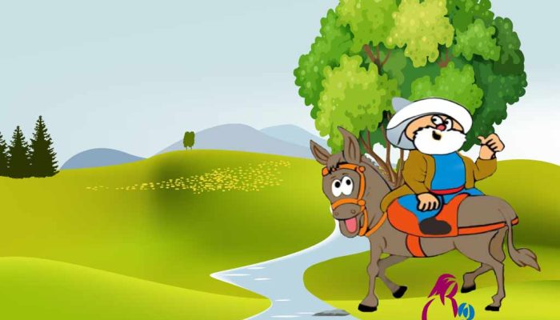
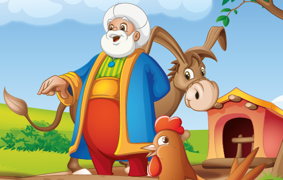
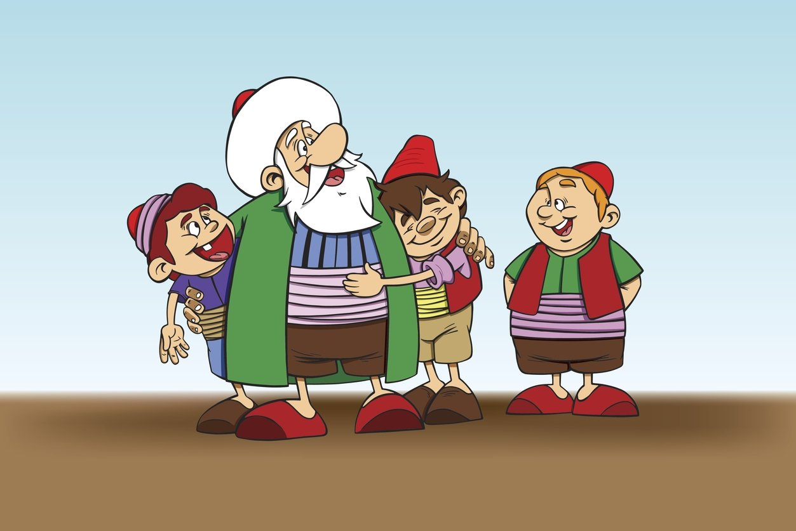

Bir varmış, bir yokmuş evvel zaman içinde kalbur saman içinden o güzelim Anadolu’nun bir köyünde Nasrettin isminde genç ve zeki bir delikanlı yaşarmış. Bu delikanlı, konuştuğu kişilerle şakalaşır bazende ibret dolu sözleriyle onları etkilermiş. Herkes Nasrettin’i sever onunla sohbet etmeyi istermiş.
Her yaptığı hareket olay olan Nasrettin’e herkes Nasrettin hoca diye hitap etmeye başlar. Gel zaman git zaman derken bir sabah eşeğine tersten binerek köyün içinden geçen hoca Nasrettin’i gören Köylülerden biri “Hayrola Nasrettin hoca, eşeğe niçin tersten binmişsin.” Diye sordu. Nasrettin “Şu eşekle birlikte hangi yöne gittiğimi bilmemek için? ” Diye cevap vermiş. Köylü adam şaşırmıştı. “Bu Hoca Nasrettin’in işine akıl, sır ermez.” Diye mırıldanarak uzaklaşmış. Köyünde dışındaki Dere kenarına giden Nasretin Hoca, bir ağacın altına eşeğini bağladıktan sonra, ağacın üzerine çıkmış. Bir süre sonra oradan geçen bazı köylüler hocanın ağacın üstüne çıkmış oradan dereyi izlediğini görünce “Hayrola hocam, ağacın üzerinde neyi izliyorsun.” Hoca “Hayır hayır hemşerim, aşağıdan bakınca deredeki balıklar tersten yüzüyor. Onlar yolunu kaybetmesin diye buradan bakıyorum.” Demiş.
Köylüler yine şaşkın bir şekilde bir şey demeden oradan ayrılmışlar. Ağacın üstünde epey bir süre kalan Hoca, ağaçtan inerek eşeğine binmiş ve köye doğru yol almış. Köye varan hoca doğrudan eve gitmiş o akşam yemeği biraz fazla kaçıran hoca, o gece uyuyamamıştı. Vakit gece yarısını geçtikten sonra bir tıkırtı işiten hoca eve hırsız girdiğini anlayınca hemen erzak dolabının içine saklanır. Hırsız evde epey bir dolaşır ama çalacak bir şey bulamayınca erzak dolabının içini açar. Hocayı dolapta gören Hırsız. Şaşkın bir şekilde “ Yahu Hoca, sen burada ne yapıyorsun.” Der. Hoca “Kusura bakma hemşerim bizim evde çalınacak bir şey olmadığından utancımdan buraya saklandım.” Der Daha da şaşıran hırsız. Başını kaşıya kaşıya dışarı çıkar. Sabah erkenden uyanan Nasrettin Hoca, yol azığını hazırladıktan sonra eşeğine binerek uzun bir yolculuğa çıkar. Az gider, uz gider dere tepe düz gider. Akşam olmak üzereyken havanın epey bir soğuması ve rüzgarın şiddetini artırması üzerine Konya’daki bir handa kalmaya karar verir. Handa iyice karnını doyuran Nasrettin Hoca, gece geç saatlerde dışarıdan çatur, çutur sesler işitince “Hancı hancı, bu han başımıza yıkılmasın.” Diye sorar.
Hancı çok rahat bir şekilde “ Sen rahat ol hoca, burası yıkılmaz o duyduğun sesler varya, onlar zikir sesleridir. Bizim bina Allahı zikrediyor.” Demiş. Nasrettin Hoca “ Ah hancı, ah işte benim de korkum o ya, şimdi bu bina coşup secdeye kapılmasın.” Demiş Hancı şaşırmış ve hocaya cevap veremez olmuştu. O geceyi orada geçiren Hoca sabah erkenden eşeğine binerek yoluna devam etmiş. Köy, kasaba ve şehir şehir dolaşan Nasrettin hoca her yerde tanınır olmuş, hatta çoğu kişi onun ermiş biri olduğunu söyleyip duruyordu. Bir süre sonra Köyüne geri dönen hoca, köy meydanına doğru gitmiş. O esnada meydanda toplanmış köylü, hocayı görünce hemen yanına çağırırlar. Hoca selam verir ve oturur ve bir gölgede oturur. Köylüden biri “Hocam, her yerde senin ermiş biri olduğunu, istediğin her şeyi ayağına kadar getirdiğini söylüyorlar. Ama buradakilerin hiçbiri senin o kerametini görmedi, bize de gösterir misin?” Başını sallayan Nasreddin Hoca; Dağa dönerek seslenir “Ey güzel dağ, haydi şimdi yanıma gel.” Diye seslenir. Köylüler de merakla dağa bakmaktaydılar. Hoca bir kez daha seslenir. Yine hareketlilik olmayınca, tekrar seslenir. Köylüler bakarlar ki dağın kıpırdadığı falan yok, hocayla dalga geçmek için bir şeyler söyleyeceği anda hoca oturduğu yerden kalkar ve şöyle der; “Hemşerilerim, bilirsiniz ki bizlerde kibir olmaz. Ne yapalım, o dağ bizim ayağımıza gelmiyorsa biz onun ayağına gideriz.” Diyerek dağa doğru yürümeye başlar.
